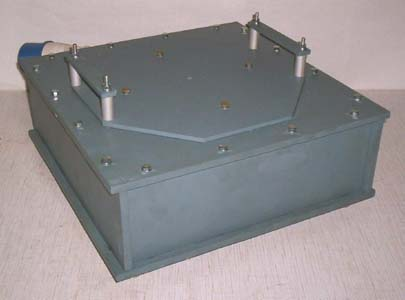
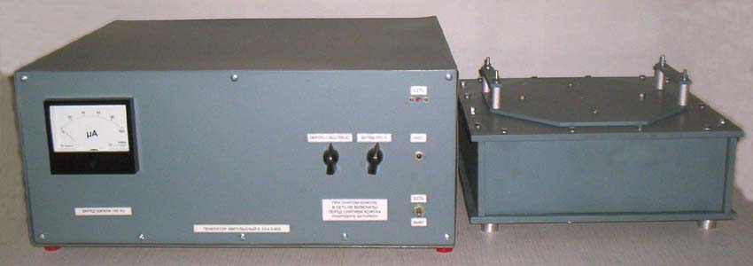
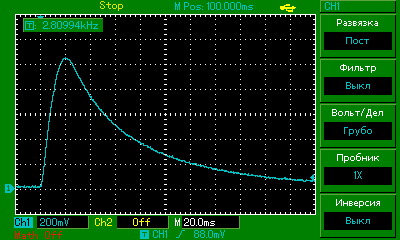

Устройство для
импульсного намагничивания и размагничивания магнитных
систем динамических головок с ферритовым кольцом диаметром до 250 мм

Назначение
Устройство намагничивающее импульсное предназначено для работы в составе установок намагничивания и размагничивания [3] в комплекте с емкостным накопителем энергии [1]. Оно позволяет намагничивать и частично размагничивать магнитные системы динамических головок (громкоговорителей) с кольцевыми постоянными магнитами на основе ферритов марок БА, СА и других диаметром до 250 мм. Может применяться в процессе производства динамических головок или при их ремонте.
Технические данные (вариант 1 с емкостным накопителем 4 кДж 900 В):
Технические данные (вариант 2 с емкостным накопителем 8 кДж 900 В):
Конструкция
Импульсное намагничивающее устройство содержит в себе соленоид, который при пропускании импульса тока от емкостного накопителя энергии возбуждает осесимметричное магнитное поле. Соленоид помещен в стальной корпус, играющий роль магнитопровода, служащего следующим целям: уменьшение сопротивления магнитному потоку и повышение магнитной индукции в зоне намагничивания, повышение однородности магнитного поля в зоне намагничивания, экранирование возбуждаемого магнитного потока в пределах габаритов устройства. Сверху зона намагничивания закрывается съемной стальной крышкой, являющейся, по сути, верхним полюсным наконечником. При намагничивании динамиков в сборе с диффузородержателем крышка не используется. Для получения магнитного поля с напряженностью, требуемой для полного (до насыщения) намагничивания магнитотвердых ферритов, необходим емкостной накопитель с полной энергией заряда примерно 4 кДж при напряжении заряда примерно до 900 В или 8 кДж 900 В (в зависимости от высоты зоны намагничивания 80 или 100 мм). На рис. 1 показан внешний вид установки намагничивания и частичного размагничивания в комплекте с емкостным накопителем энергии 4 кДж 900 В, а на рис. 2 - с емкостным накопителем 8 кДж 900 В [1].

Рис. 1. Установка намагничивания и частичного размагничивания магнитных систем динамиков с ферритовым кольцом диаметром до 250 мм в комплекте с емкостным накопителем энергии 4 кДж 900 В.
Рис. 2. Установка намагничивания и частичного размагничивания магнитных систем динамиков с ферритовым кольцом диаметром до 250 мм в комплекте с емкостным накопителем энергии 8 кДж 900 В.
Порядок работы
Для частичного размагничивания магнитной системы динамик устанавливается в зоне намагничивания (размагничивания) устройства с использованием при необходимости стальных прокладок. Съемную крышку применять не обязательно. С помощью частично заряженного емкостного накопителя энергии создается импульс тока. Уровень заряда емкостного накопителя подбирается опытным путем, чтобы обеспечить максимально полное размагничивание постоянного магнита.
При намагничивании динамик вставляется в зону намагничивания с использованием при необходимости стальных прокладок. При намагничивании в сборе с диффузородержателем съемная крышка не применяется. Если намагничивание производится без диффузородержателя, желательно закрыть зону намагничивания съемной крышкой. Это позволит повысить напряженность магнитного поля и улучшить его однородность. Импульс тока создается с помощью емкостного накопителя энергии, заряженного до уровня 100 %.
Можно также намагничивать и частично размагничивать ферритовые магниты по отдельности, помещая их в зону намагничивания (размагничивания) устройства в немагнитном токонепроводящем контейнере (например, деревянном), исключающем свободное перемещение магнитов. Сверху зона намагничивания закрывается съемной крышкой. Импульс тока требуемой величины создается с помощью емкостного накопителя энергии, заряженного до требуемого уровня.
Для контроля величины магнитной индукции в зоне намагничивания (размагничивания) может использоваться импульсный тесламетр [2]. На рис. 3 показан импульс магнитной индукции в зоне намагничивания при совместной работе устройства с емкостным накопителем 8 кДж 900 В при 100 % уровне заряда.

Рис. 3. Импульс магнитной индукции в зоне намагничивания устройства при подключении к емкостному накопителю энергии 8 кДж 900 В. Цена деления по вертикали 200 мТл, амплитуда магнитной индукции несколько превышает 1 Тл.
Ссылки:
05.09.2013
10.09.2021
Альтернативные источники
энергии
Компьютеры и
Интернет
Магнитные поля
Механотронные системы
Перспективные
разработки
Электроника и
технология